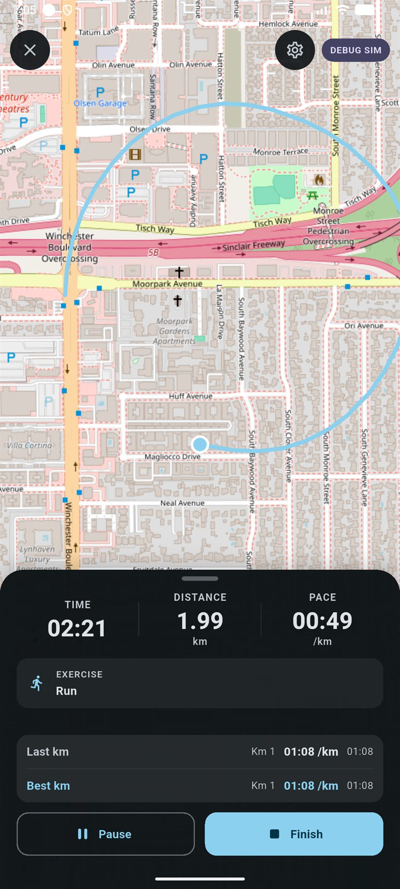
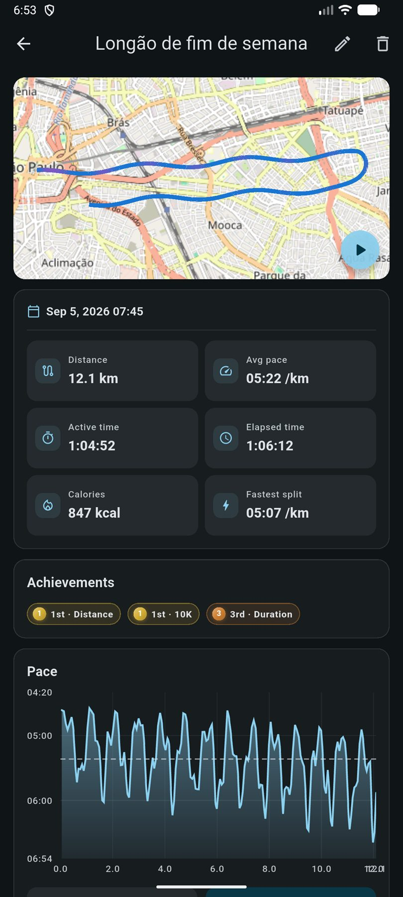

How recording works
Starting a run hands control to a native foreground service that owns the GPS subscription and writes its own durable copy of the session. The app UI subscribes to a live event stream purely to draw the screen.
The event stream is treated as a UI signal only. Everything durable travels through the native service's own store and is imported into the app database afterwards. The database is the single source of truth, and the flow only ever goes one way.
That gives you three recoveries for free:
- Reopening mid-run reattaches to the session the service still owns.
- Reopening after a crash or a kill imports the finished native recording into your history.
- A failed database write leaves the native copy intact so the import can be retried.
Permissions
- Precise location
- Required. Denying it is reported as a clear error rather than a silently empty route.
- Notifications
- Optional on Android 13 and later. Refusing it never blocks GPS recording; you only lose the live notification.
GPS run tracking needs the native service and is therefore Android only. On other platforms the feature reports itself as unsupported instead of failing, and stationary bike sessions remain available because they need no GPS.
While you run
The record screen shows a live map of the route with a draggable sheet over it holding your metrics, the split list and (if you are running a structured session) the interval rows.

What gets stored
Beyond the raw track, the app derives and keeps a set of metrics per activity:
- Per-kilometre splits and your fastest split pace.
- Elevation gain and loss, plus minimum and maximum altitude.
- Mean GPS accuracy, so you can tell a bad-signal run from a bad run.
- Best-effort times for 1 K, 3 K, 5 K, 10 K, half marathon and marathon: the fastest continuous stretch of that distance inside the run, not just the finishing time. These are computed lazily and backfilled onto older activities.
- Achievements: where this run ranks against your history for distance, duration and standard efforts.
average pace = moving time ÷ distance in km
Pace is computed from moving time, not elapsed time, so a traffic light
does not ruin the number. It is only reported for running, not cycling.
Calories
Two different estimates, both needing a logged body weight:
- Running: roughly 1 kcal per kilogram per kilometre.
- Stationary cycling: a MET-based estimate around 7 MET.
If a real calorie value is available on the activity, it always wins over the estimate.
After the run

- Post-run review: name the session, adjust details and confirm it before it lands in history.
- Replay: animate the route back with the pace at each point.
- History: a list of every activity, filterable and linked to detail.
- Stats and achievements: distance and time by week and month, pace trends, and your record board.
Route data is compacted in the background: old routes are optimised and freed space is reclaimed, so a long history of runs does not grow the database without limit.
Stationary bike sessions
The bike is deliberately simpler: no GPS, no native service, just a timer whose elapsed values are derived from timestamps. That means the count stays correct even when the system suspends timers while the app is in the background.
Bike sessions share the same activity table as runs and are distinguished by activity type, so they show up in cardio totals, feed distance and time goals, and count toward periodization running metrics where relevant, while pace, which would be meaningless, is not recorded.
How runs connect to the rest of the app
- Goals: aerobic distance, time and day goals count completed runs alongside cardio sets, and a run plus a cardio set on the same day still counts as one day. See Progress & goals.
- Periodization: a phase can set weekly run sessions, weekly distance, a long run and a number of quality sessions, and adherence is measured against your actual runs. See Periodization.
- Plans: a scheduled plan session can be executed directly from the record screen and links back to the plan. See Plans, intervals & voice.
- AI Coach: read-only tools cover activities, run progress, achievements, plans and the upcoming schedule.